Conteúdo: Práticas agrícolas, condições socioterritoriais, formas de acesso à terra e
técnicas e relações de trabalho. Sistemas agrícolas.
Objetivo: Identificar e compreender as condições sociais e territoriais que determinam as
práticas agrícolas, com destaque para as formas de acesso à terra e para as técnicas e relações de trabalho
utilizadas. Descrever e comparar alguns exemplos de sistemas agrícolas existentes hoje no mundo.
Digite seu nome
Introdução
Na aula anterior, vimos a Nova Ordem Mundial Multipolar e como o cenário
geopolítico e econômico do mundo se transformou.
Hoje vamos expandir essa análise para as práticas agrícolas e as relações com o espaço geográfico atual
A agricultura não escapou do movimento de modernização do meio técnico científico informacional. É isso que
vamos estudar hoje!
Questões para serem respondidas no caderno sobre o tema da aula de hoje:
1. Por que a agricultura é considerada um pilar fundamental da humanidade? Explique.
2. Quais são os principais benefícios do Meio Técnico-Científico-Informacional (MTCI) na
agricultura? Dê exemplos.
3. Descreva um exemplo de como a agricultura arcaica impactou o desenvolvimento das primeiras
civilizações.
4. Qual é o papel da rotação de culturas na agricultura? Explique como essa prática beneficia o
solo.
5. Por que a urbanização pode afetar a produção agrícola em áreas rurais? Dê um exemplo.
6. Explique como o afolhamento contribui para a proteção e enriquecimento do solo na agricultura.
7. O que são plantation na agricultura? Dê um exemplo de um país que é um grande produtor de uma
cultura específica em plantation.
8. Por que a produção mundial de alimentos é crucial para a segurança alimentar global? Explique.
9. Como o comércio internacional de alimentos pode beneficiar os países exportadores e importadores?
Dê exemplos.
10. Em sua opinião, qual é a importância de se adotar práticas sustentáveis na agricultura? Dê sua
perspectiva sobre os benefícios de práticas agrícolas sustentáveis para o futuro.
Importância da Agricultura no Mundo
A agricultura é um dos pilares fundamentais da humanidade, sendo responsável por produzir alimentos, fibras e
matérias-primas essenciais para a nossa sobrevivência e o desenvolvimento das sociedades. Seu impacto vai
desde as comunidades rurais mais remotas até as economias globais.
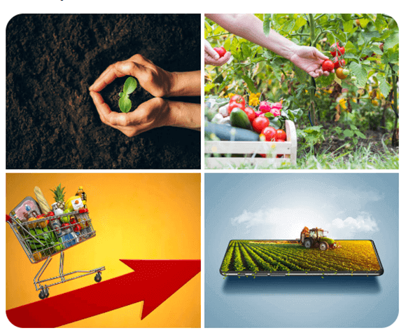
Fonte: https://www.pexels.com/.
Por que a Agricultura é Importante?
Segurança Alimentar e Nutricional: Com o crescimento da população mundial, a agricultura
desempenha um papel crucial em garantir que milhões de pessoas tenham acesso a alimentos básicos para uma
vida saudável.
Contribuição para a Economia Global: Além de alimentar o mundo, a agricultura é um setor
econômico vital para muitos países. Ela contribui significativamente para o Produto Interno Bruto (PIB),
gerando empregos e impulsionando o comércio internacional.
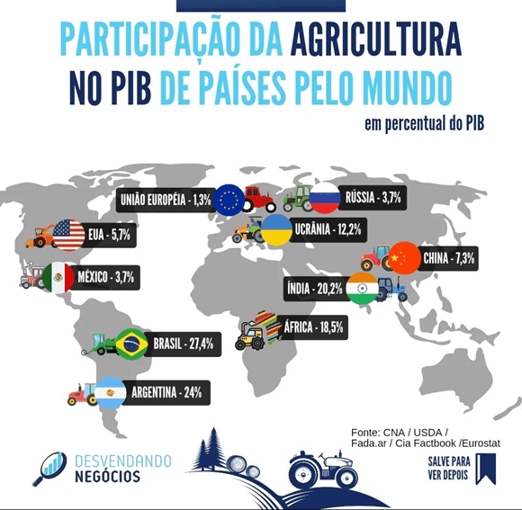
Sustentabilidade Ambiental: A forma como cultivamos nossos alimentos afeta diretamente a
saúde do planeta. Práticas agrícolas sustentáveis, como o cuidado com o solo e a conservação da água, são
essenciais para proteger o meio ambiente a longo prazo.
Teste seu conhecimento
Qual a importância da agricultura para a humanidade?
Histórico da Agricultura no Mundo
Agricultura Arcaica
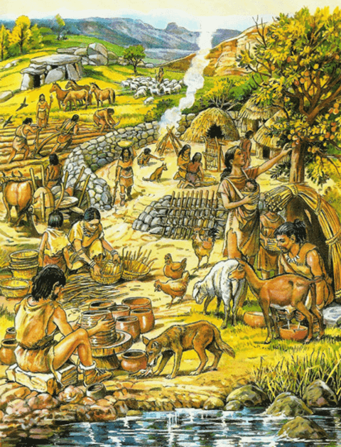
A agricultura arcaica marca o início das práticas agrícolas na história da humanidade. Foi nesse período
que as comunidades humanas começaram a abandonar o nomadismo em busca de alimentos e passaram a cultivar
plantas e criar animais. Algumas das civilizações antigas que se destacaram nesse período foram:
Mesopotâmia: Conhecida como o "berço da civilização", a Mesopotâmia, localizada
entre os rios Tigre e Eufrates, desenvolveu técnicas de irrigação que permitiram o cultivo de grãos
como cevada e trigo. Cidades como Ur e Babilônia prosperaram graças à agricultura.
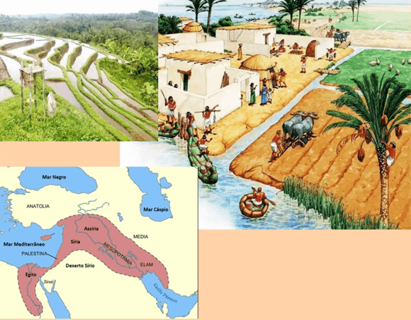
Egito Antigo: Às margens do rio Nilo, o Egito Antigo floresceu com uma agricultura
altamente produtiva. A inundação anual do rio depositava nutrientes ricos nas terras, permitindo o
cultivo de uma variedade de culturas, incluindo trigo, cevada, linho e vegetais.
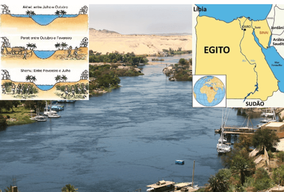
Agricultura Moderna
A transição para a agricultura moderna foi marcada pelas Revoluções Agrícolas, momentos de grandes
avanços tecnológicos e práticas inovadoras que aumentaram significativamente a produção de alimentos. Um
exemplo notável desse período é a Revolução Verde.
Índia: A Índia é um dos países que se beneficiaram enormemente da Revolução Verde.
No final do século XX, o país estava enfrentando uma crise alimentar devido ao rápido crescimento
populacional. No entanto, com a introdução de variedades de alto rendimento de trigo e arroz, além
do uso intensivo de fertilizantes e irrigação, a Índia conseguiu se tornar autossuficiente em
produção de alimentos. Isso teve um impacto significativo na redução da fome e da pobreza no país.
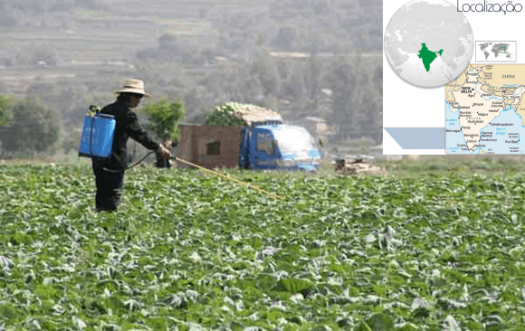
Uso de fertilizantes na agricultura indiana.
Agricultura Contemporânea
Na agricultura contemporânea, o uso de tecnologia, biotecnologia e práticas sustentáveis está moldando o
futuro da produção de alimentos. Países líderes nesse campo estão desenvolvendo métodos inovadores para
enfrentar os desafios da produção agrícola no século XXI.
Israel: Apesar de seu tamanho pequeno e de seu clima desafiador, Israel se tornou
um líder em tecnologias agrícolas. O país é conhecido por suas práticas avançadas de irrigação, como
o gotejamento, que permite uma utilização eficiente da água. Além disso, Israel investe em pesquisa
e desenvolvimento de variedades de plantas resistentes a condições extremas, como a seca,
tornando-se um exemplo de como a inovação pode transformar a agricultura.
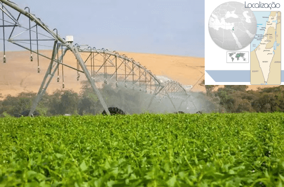
Agricultura irrigada em Israel.
Esses exemplos ilustram a evolução da agricultura ao longo dos séculos, desde as práticas rudimentares
das civilizações antigas até a tecnologia de ponta e as abordagens sustentáveis da agricultura
contemporânea. A história da agricultura é uma narrativa de adaptação e inovação, essenciais para
alimentar uma população em constante crescimento em todo o mundo.
Teste seu conhecimento
As técnicas agrícolas antigas, apesar de não serem informatizadas, tiveram um impacto significativo na
modificação do espaço geográfico, como evidenciado pela construção de sistemas de irrigação, desmatamento
para expansão agrícola e o surgimento de assentamentos permanentes.
Relação entre Campo e Cidade no Mundo Atual
Diferenças na População Rural e Urbana
No mundo contemporâneo, a distribuição da população entre áreas rurais e urbanas desempenha um papel crucial
na dinâmica socioeconômica dos países. Essa relação varia consideravelmente ao redor do globo, com impactos
significativos na agricultura e no desenvolvimento urbano.
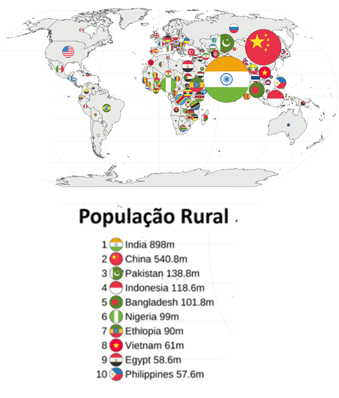
Índia: Um exemplo marcante dessa relação é a Índia, um país com uma vasta população rural e
uma crescente urbanização. Enquanto cerca de 60% da população indiana ainda vive em áreas rurais, as cidades
como Mumbai, Nova Delhi e Bangalore têm testemunhado um rápido crescimento populacional e econômico. Esse
contraste entre o campo e a cidade na Índia reflete desafios e oportunidades únicas, como a necessidade de
modernização agrícola e o surgimento de centros urbanos como polos de desenvolvimento econômico.
Impacto da Urbanização na Agricultura
A urbanização, processo pelo qual a população migra das áreas rurais para as áreas urbanas, tem um impacto
direto na agricultura, principalmente em países em desenvolvimento.
China: Um exemplo notável é a China, que experimentou uma das maiores migrações urbanas da
história. Milhões de pessoas deixaram o campo em busca de oportunidades nas cidades. Esse êxodo rural teve
um impacto significativo na agricultura chinesa, com áreas rurais enfrentando uma diminuição da mão de obra
agrícola e mudanças nos padrões de produção. Além disso, a urbanização também tem levado à conversão de
terras agrícolas em áreas urbanas, o que pode afetar a produção de alimentos e a segurança alimentar.
Esses exemplos destacam a complexa relação entre campo e cidade no mundo atual. Enquanto a urbanização
oferece oportunidades econômicas e sociais para muitos, também apresenta desafios para a agricultura,
exigindo inovação, modernização e planejamento cuidadoso para garantir a segurança alimentar e o
desenvolvimento sustentável.
Sistemas Agrícolas e Técnicas de Cultivo
Rotação de Culturas
A rotação de culturas é uma prática agrícola essencial que envolve a alternância de diferentes tipos de
plantações em uma mesma área ao longo do tempo. Essa técnica é fundamental para manter a saúde do solo,
evitar o esgotamento de nutrientes e reduzir a incidência de pragas e doenças.
Brasil: Um exemplo notável é o Brasil, onde a rotação de culturas é amplamente adotada.
Muitos agricultores brasileiros alternam o cultivo de soja com milho, por exemplo. Isso não apenas ajuda
a melhorar a fertilidade do solo, mas também contribui para uma produção agrícola mais sustentável e
diversificada.
O afolhamento é uma técnica que envolve o uso de plantas de cobertura para proteger e enriquecer o solo.
Essas plantas, geralmente cultivadas entre as safras principais, ajudam a evitar a erosão, melhorar a
estrutura do solo e fornecer matéria orgânica valiosa.
Canadá: No Canadá, o uso de trevo e aveia como plantas de cobertura é comum. Essas
plantas não apenas protegem o solo durante os períodos em que não há cultivos principais, mas também
ajudam a fixar nitrogênio no solo, reduzindo a necessidade de fertilizantes químicos.
Agricultura em Curvas de Nível
A agricultura em curvas de nível é uma prática de manejo do solo projetada para reduzir a erosão e
conservar a água. Essa técnica envolve o cultivo das terras em níveis horizontais, seguindo as curvas
naturais do terreno.
Filipinas: Um exemplo impressionante são os terraços agrícolas nas Filipinas. Por
séculos, os agricultores filipinos têm construído terraços em encostas de montanhas, criando degraus de
cultivo que ajudam a reter a água da chuva, reduzir a erosão e maximizar o espaço disponível para o
cultivo de arroz e outros cultivos.
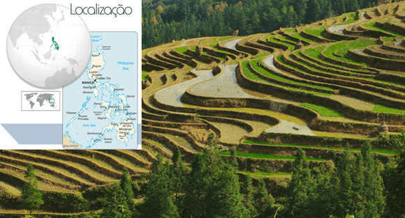
Terraços de arroz nas Filipinas.
Plantio Direto
O plantio direto é uma prática em que as sementes são plantadas diretamente no solo sem a necessidade de
aração prévia. Essa técnica ajuda a conservar a umidade do solo, reduzir a perda de nutrientes e
melhorar a estrutura do solo.
Estados Unidos: No Meio-Oeste dos Estados Unidos, o plantio direto é amplamente adotado.
Agricultores nessa região utilizam essa técnica em larga escala para cultivar culturas como milho e
soja. O resultado é uma redução significativa na erosão do solo e uma maior eficiência no uso de insumos
agrícolas.
Essas técnicas e sistemas agrícolas representam a busca contínua por práticas mais sustentáveis,
eficientes e amigáveis ao meio ambiente na produção de alimentos ao redor do mundo. Ao incorporar essas
inovações, os agricultores podem não apenas melhorar a produtividade, mas também contribuir para a
conservação dos recursos naturais e a proteção do solo a longo prazo.
Classificação das Atividades Agrícolas
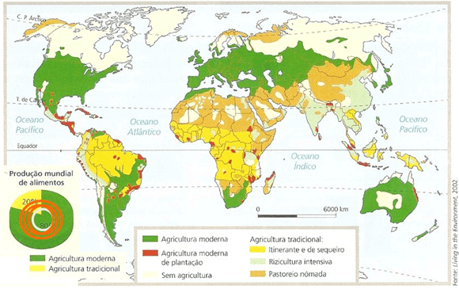
Agricultura de Subsistência
A agricultura de subsistência é aquela em que os agricultores produzem alimentos principalmente para o
consumo próprio e de suas famílias, com uma produção limitada para o mercado.
Nepal: Um exemplo notável é o Nepal, onde a agricultura de subsistência é uma prática comum
em muitas áreas rurais. Os agricultores no Nepal cultivam arroz, legumes e outras culturas para atender às
necessidades alimentares de suas comunidades locais, com uma parte menor destinada à venda em mercados
locais.
Agricultura Comercial
A agricultura comercial é caracterizada pela produção em larga escala de culturas destinadas principalmente à
venda e ao mercado consumidor.
Brasil: O Brasil é um exemplo destacado de agricultura comercial, sendo um dos líderes
mundiais na exportação de produtos agrícolas, como soja, milho, café e carne bovina. Grandes áreas de terras
são dedicadas ao cultivo em larga escala para atender à demanda nacional e internacional.
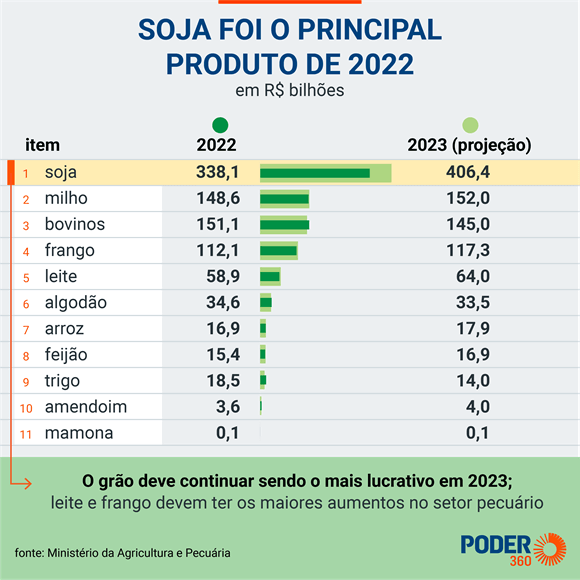
Agricultura de Jardinagem
A agricultura de jardinagem refere-se à produção agrícola em pequenas propriedades ou jardins familiares,
geralmente com o objetivo de venda em mercados locais ou regionais.
Quênia: No Quênia, a agricultura de jardinagem é uma parte significativa da economia rural.
Muitas famílias têm pequenas parcelas de terra onde cultivam uma variedade de produtos, como frutas, legumes
e ervas, para vender em mercados locais ou diretamente aos consumidores.
Plantation
As plantações são grandes propriedades agrícolas que se dedicam à produção em larga escala de uma única
cultura, conhecida como monocultura.
Costa do Marfim: Um exemplo emblemático de plantation é a Costa do Marfim, que é o principal
produtor mundial de cacau. As vastas plantações de cacau na Costa do Marfim são cultivadas de forma
intensiva e destinadas principalmente à exportação para atender à demanda global por chocolate e produtos de
cacau.
Produção Mundial de Alimentos
Principais Grãos
Líderes de Produção Mundial
Milho
Estados Unidos: Líder mundial na produção de milho, com vastas extensões de terras dedicadas a
esse cereal.
Trigo
Rússia: Um dos maiores produtores de trigo do mundo, com extensas planícies de cultivo em suas
regiões.
Arroz
China: Principal produtor mundial de arroz, cultivando uma variedade de tipos de arroz em suas
terras férteis.
Exportação e Importação de Alimentos
Principais Exportadores
Principais Importadores
Brasil: Líder mundial na exportação de soja, um dos principais produtos agrícolas do país.
Japão: Importa uma grande quantidade de alimentos processados devido à sua demanda interna e à
escassez de terras agrícolas.
Estados Unidos: Importante exportador de milho, fornecendo uma parte significativa do mercado
global.
Alemanha: Importante importador de carnes de diversos países, atendendo à demanda de seus
consumidores.
Países Baixos: Conhecidos por suas exportações de flores e produtos agrícolas de alto valor
agregado.
Não existe pergunta boba! A Ciência é feita de perguntas!
P:
Quais são os impactos socioeconômicos da expansão das plantações de monocultura de soja na América do Sul?
R: A expansão das plantações de monocultura de soja na América do Sul tem
gerado diversos impactos socioeconômicos. Isso inclui a concentração de terras em mãos de grandes empresas,
levando à expulsão de pequenos agricultores e à desigualdade de acesso à terra. Além disso, a monocultura de
soja pode resultar na perda de biodiversidade, impactando negativamente os ecossistemas locais. Do ponto de
vista econômico, muitas vezes essa produção é destinada à exportação, o que pode criar uma dependência
econômica e vulnerabilidade a oscilações no mercado internacional.
P:
Como a intensificação da pecuária impacta as mudanças climáticas globais?
R: A intensificação da pecuária tem um papel significativo nas mudanças
climáticas globais. O aumento do número de animais em confinamento resulta em maiores emissões de gases de efeito
estufa, como metano e óxido nitroso. Além disso, o desmatamento para criação de pastagens e produção de ração
contribui para a liberação de dióxido de carbono na atmosfera. Esses fatores combinados aumentam a pegada
ambiental da indústria pecuária, contribuindo para o aquecimento global e outros impactos climáticos.
P:
Quais são os benefícios e desafios da agricultura orgânica em comparação com a agricultura convencional?
R: A agricultura orgânica traz diversos benefícios, como a redução do uso de
agrotóxicos e fertilizantes químicos, preservação da biodiversidade e produção de alimentos mais saudáveis. No
entanto, enfrenta desafios como menor produtividade por área cultivada, custos mais elevados de produção e
controle de pragas e doenças sem o uso de produtos químicos. Além disso, a certificação orgânica pode ser um
processo complexo e oneroso para os agricultores.
RESUMO
A Importância da Agricultura no Mundo
Segurança Alimentar e Nutricional: Garante o acesso a alimentos básicos para uma vida saudável.
Contribuição para a Economia Global: Importante setor econômico, contribui para o PIB, gera empregos e impulsiona o comércio internacional.
Sustentabilidade Ambiental: Práticas agrícolas sustentáveis são essenciais para proteger o meio ambiente.
Meio Técnico-Científico-Informacional (MTCI) na Agricultura
Mecanização Agrícola: Exemplo: EUA (tratores e colheitadeiras).
Biotecnologia e OGMs: Exemplo: Brasil (soja transgênica).
Sensoriamento Remoto e Agricultura de Precisão: Exemplo: Índia (monitoramento das plantações).
Uso de Dados e Análise: Exemplo: Países Baixos (análise de dados para otimizar o cultivo).
Histórico da Agricultura no Mundo
Agricultura Arcaica: Mesopotâmia (irrigação e cultivo de grãos) e Egito Antigo (agricultura ao longo do Nilo).
Agricultura Moderna: Revolução Verde (uso de fertilizantes e variedades de alto rendimento). Exemplo: Índia (autossuficiência alimentar).
Agricultura Contemporânea: Uso de tecnologia, biotecnologia e práticas sustentáveis. Exemplo: Israel (irrigação avançada).
Relação entre Campo e Cidade no Mundo Atual
Diferenças na População Rural e Urbana: Exemplo: Índia (população rural e urbanização crescente).
Impacto da Urbanização na Agricultura: Exemplo: China (migração urbana e mudanças na agricultura).
Sistemas Agrícolas e Técnicas de Cultivo
Rotação de Culturas: Exemplo: Brasil (alternância de soja e milho).
Afolhamento: Exemplo: Canadá (uso de trevo e aveia).
Agricultura em Curvas de Nível: Exemplo: Filipinas (terraços de arroz).
Plantio Direto: Exemplo: EUA (cultivo de milho e soja).
Classificação das Atividades Agrícolas
Agricultura de Subsistência: Exemplo: Nepal (produção para consumo próprio).
Agricultura Comercial: Exemplo: Brasil (produção em larga escala para exportação).
Agricultura de Jardinagem: Exemplo: Quênia (produção em pequenas propriedades).
Plantation: Exemplo: Costa do Marfim (monocultura de cacau).
Dados Mundiais Relevantes na Agricultura
Produção Mundial de Alimentos:
Milho: EUA.
Arroz: China.
Trigo: Rússia.
Exportação e Importação de Alimentos:
Principais Exportadores:
Brasil: Soja.
EUA: Milho.
Países Baixos: Flores e produtos agrícolas.
Principais Importadores:
Japão: Alimentos processados.
Alemanha: Carnes.
Atividade: Descrição de uma Foto sobre Agropecuária Mundial
Objetivo: Desenvolver a habilidade de descrever detalhadamente uma foto relacionada ao tema
da aula "Agropecuária mundial: sistemas agrícolas".
Materiais Necessários: Três fotos relacionadas à agropecuária mundial e sistemas agrícolas.
1. Escolha uma das três fotos acima relacionadas à agropecuária mundial e sistemas agrícolas para cada dupla.
Instruções para a Descrição:
Observe atentamente a foto. Utilize os conhecimentos prévios de conceitos geográficos que já possui.
Procure incluir na descrição:
a) Localização e Contexto: Comece descrevendo o contexto geográfico da foto. Onde a
cena está localizada? É uma área rural, urbana ou suburbana?
b) Elementos Físicos: Descreva os elementos físicos presentes na foto, como
terrenos, plantações, animais, estruturas agrícolas, máquinas, etc.
c) Atividades Agrícolas: Identifique e descreva as atividades agrícolas sendo
realizadas na foto. Por exemplo, cultivo de determinada cultura, criação de animais, colheita, etc.
d) Condições Socioterritoriais: Analise as condições sociais e territoriais que
podem ser inferidas pela foto. Isso inclui aspectos como tipo de propriedade (pequena, média,
grande), presença de trabalhadores, tecnologias utilizadas, etc.
e) Clima e Ambiente: Se possível, observe e descreva aspectos do clima e ambiente
presentes na foto. Isso pode incluir o tipo de vegetação, características do solo, clima
predominante, entre outros.
Dicas:
Utilize termos geográficos específicos, como tipos de relevo, clima, tipos de solo, sistemas
agrícolas (subsistência, comercial, etc.), formas de uso da terra, entre outros.
Façam anotações enquanto observam a foto, destacando os elementos mais relevantes para a descrição.
Apresentação:
Apresente sua descrição para a turma.
Após todas as apresentações, vamos discutir as diferentes descrições feitas.